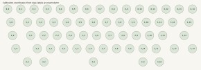

English | Chinese
Firmware for the E73 lower-right PCB
The CORNER-07 delivery contains the normal and calibrator HEX files and their firmware manifest. In the delivery folder, use the files in 05-firmware/releases/. Board and firmware acceptance checks
Use HEX for initial SWD programming. It writes the UICR record that releases the NFC pins for GPIO. Application code starts at address zero. Confirm the custom J3 pinout before connecting a probe, then follow the calibration procedure below.
Both images use internal RC low-frequency clock and REG1 LDO. After host configuration, charging and USB HID operate together with USB priority; suspend disables charger input, and detach permits BLE fallback. These are linked-binary and host-model checks. No unit has passed physical USB/BLE/EC, battery charging, thermal or RF tests. Battery reporting remains disabled pending pack/measurement integration. The passive RC model uses assumed parasitics, not extracted PCB/NiZ capacitance.
Manifest · Normal HEX · Calibrator HEX
First programming with a J-Link
Install the SEGGER J-Link software, and use a probe with 3.3 V target logic. Power the board through the verified supply path, switch SW100 on and confirm 3.3 V before connecting. J3 pin 1 is VTref, not a probe power input; pins 2/3/4/5/6 are SWDIO/GND/SWDCLK/RESET_N/GND. Do not connect two competing 5 V sources.
Keep the real battery disconnected for first programming and USB enumeration. Use the J2 battery simulator for the unplugged BLE test. Repeat that test with a protected pack after the pack passes first-article checks. Bench power and charging sequence
Open a terminal in the directory containing this image manifest and releases/: 05-firmware/ in the delivery folder, or hardware/e73-hhkb-corner/firmware/ in the repository. Start Commander (Windows uses JLink.exe):
JLinkExe -device nRF52840_xxAA -if SWD -speed 1000 -autoconnect 1
At its prompt, program the calibrator:
r
h
loadfile releases/calibrator/yeti60-e73.hex
r
g
q
Check that download/verification succeeds. These are documented Commander commands, not a physical flash test of this board. A locked factory module may require recovery; recovery/full-chip erase loses settings. Do not use it for an update after calibration. The code partition is 0x00000–0xEFFFF; preserve settings at 0xF0000–0xFFFFF. Inspect the programmer's erase plan and back up settings before updating. If it proposes a full erase, stop and resolve preservation first. HEX includes the required UICR record; no UF2 drive is expected.
Before 60-key calibration, disconnect the probe and fully remove target power. Restore the verified supply and let the calibrator start. Reconnect through J3 and use Mem32 0x00000000 2 to read the first two words. For this CORNER-07 calibrator expect 200100A0 0000D25D. Decline any unlock or erase prompt during this readback. Resume the CPU with g if halted, then quit with q. J-Link read commands
On nRF52840 Fxx and later, application startup consumes UICR.APPROTECT HwDisabled (low byte 0x5A), which is not supplied in the calibrator HEX. Only if first flash or this cold-cycle readback fails with access protection on a blank first article, follow Nordic nRF Util recovery (which erases flash and sets persistent UICR access) and then reflash the calibrator HEX. Do not recover calibrated boards. nRF52840 DIF / APPROTECT
Capture every key and install normal firmware
Disconnect the bench supply before connecting the host USB cable. Calibrator exposes the USB logging/shell interface. Open its serial port in a terminal; 115200, 8N1 and no hardware flow control is a suitable terminal setting. Use another keyboard to enter commands. First assemble the plate, domes and springs; finger-touching bare electrodes is not the final mechanism's calibration.
Use the 60-key row/column sheet and front-view diagram. Only the central spacebar EC position is active; stabilizer side stems are passive.

- Release every key, run
yeti_calibrate release, and wait for the 128-frame completion message.
- Hold one key fully down before running its command. For the diagram's
0,0 position use yeti_calibrate press 0 0. Keep it held until the 128-sample completion message, then release. Repeat the corresponding command for all 60 active positions.
- Run
yeti_calibrate status. Resolve insufficient samples, overlap, saturation or guard failures; do not bypass them. Run yeti_calibrate save only after every key passes.
- Reconnect the SWD probe with the same voltage and polarity precautions, then follow the settings-preserving upgrade below.
Upgrade to normal firmware and preserve calibration
Work in the delivery's 05-firmware/ directory. Exit J-Link Commander so nRF Util can use your probe. Install the device command once, list the probes, then replace the example serial with your own. Keep the same PCB powered and connected throughout the backup and update. Nordic installation notes · Install the device command
nrfutil install device
nrfutil device list
PROBE=123456789
python3 prepare-normal-update.py prepare yeti60-e73-update.hex
nrfutil device read --serial-number "$PROBE" --address 0x1000120C --bytes 4
nrfutil device read --serial-number "$PROBE" --address 0xF0000 --bytes 65536 \
--to-file settings-before.hex
python3 prepare-normal-update.py check-settings settings-before.hex
The offline update helper checks the normal HEX against the manifest and emits only application addresses below 0xF0000. Program after the UICR read shows NFCPINS = 0xFFFFFFFE and the helper confirms a complete nonblank backup. A blank backup means the stored calibration needs checking in the calibrator. Keep the backup local because it can contain Bluetooth bonds. Nordic memory read syntax
nrfutil device program --serial-number "$PROBE" --firmware yeti60-e73-update.hex \
--options chip_erase_mode=ERASE_RANGES_TOUCHED_BY_FIRMWARE,verify=VERIFY_READ,reset=RESET_NONE
nrfutil device read --serial-number "$PROBE" --address 0xF0000 --bytes 65536 \
--to-file settings-after.hex
python3 prepare-normal-update.py compare-settings settings-before.hex settings-after.hex
Use the explicit erase option above. The default nRF Util mode is whole-chip erase. After programming and readback succeed and same_settings is true, run nrfutil device reset --serial-number "$PROBE". If verification or the comparison fails, keep the original backup and investigate before any further erase or reset. Nordic programming options
Confirm USB key-down and release, modifiers, Fn and large-key edge return. Then test BLE pairing, reconnect, wake and USB priority. A changed housing, dome, spring, plate stack or PCB fingerprint requires recalibration.
Record real results; the delivered host tests do not replace these unit tests.
Bluetooth profiles and recovery
Hold Fn and tap Q, W, E, R or T to select profile slots 0–4. During bring-up, use a spare slot. On that slot, confirm that a single Fn + Backspace tap and a hold leave the bond intact. Holding Fn and tapping Backspace twice within 400 ms clears only the selected slot. Forget the old pairing on that host if needed, then pair the slot again. Confirm other paired slots still reconnect and the keys work with their saved calibration. Base-layer Backspace retains its normal function. Compiled firmware and host recovery checks
Rebuild from source
Run from the full source checkout after the native routing, USB reference-ground and fit checks.
uv run --python 3.14.7 --with-requirements requirements-audit.txt python scripts/build_e73_corner_firmware.py
python3 scripts/check_e73_corner_firmware.py
The builder requires the pinned ZMK workspace, its pinned Docker image and a running Docker daemon. It builds in an ignored isolated root, checks both linked ARM images, runs the core/calibration/USB/GPIO/scan/key-pipeline/NVS/recovery and RC sensitivity suite, and runs linked-target and suite mutation tests before copying images. --prepare-only prepares the pin contract without building. --development-build builds/tests in the ignored workspace and publishes no images.